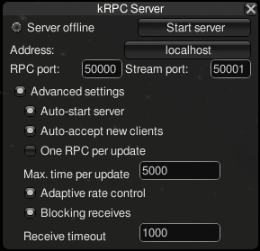

Internals of kRPC¶
Server Performance Settings¶
kRPC receives RPCs, execute them and returns results when the mod’s
FixedUpdate method is invoked. kRPC may execute multiple RPCs within a
single call to FixedUpdate and this behavior is controlled by several
configurable settings:

Server window showing the advanced settings.
- Auto-start server: When enabled, the server will start automatically when the game loads.
- Auto-accept new clients: When enabled, new client connections are automatically allowed. When disabled, a pop-up is displayed asking whether the new client connection should be allowed.
- One RPC per update: When enabled, the server will execute at most one RPC per client per update.
- Maximum time per update: This is the maximum number of nanoseconds that the server will spend processing RPCs in the call to FixedUpdte. This is used to limit the time taken by the server per frame. A high value, for example 20000 ns, will allow the server to process many RPCs at the expense of the game’s framerate. A low value, for example 1000 ns, won’t allow the server to execute many RPCs per update, but will allow the game to run at a much higher framerate.
- Adaptive rate control: If enabled, the server will automatically adjust the maximum time per update parameter, so that the game runs at a minimum of 60 FPS.
- Blocking receives: If enabled, when the server checks for new RPCs from clients, it will wait for a up to a fixed amount of time.
- Receive timeout: When blocking receives are enabled, this is the maximum amount of time the server will wait for a new RPC from a client.